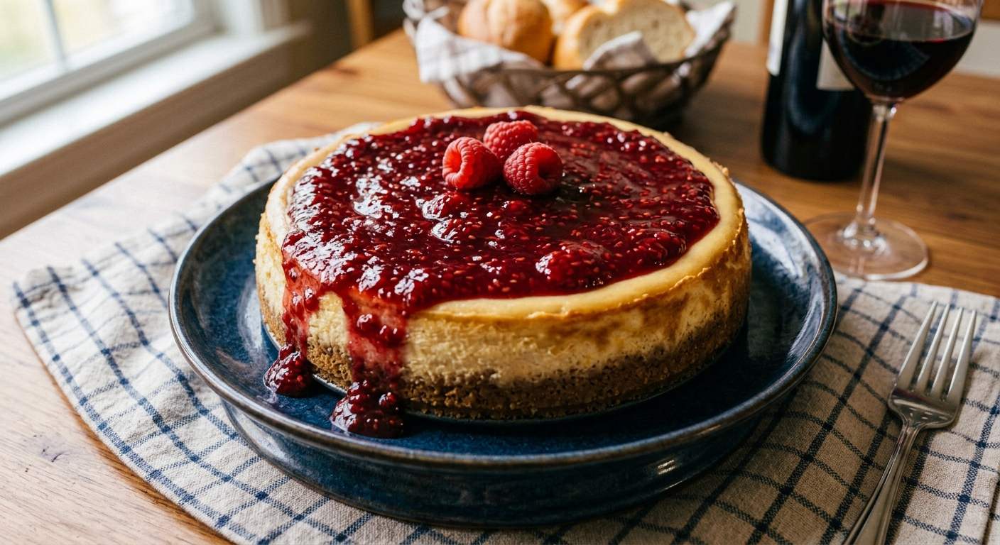
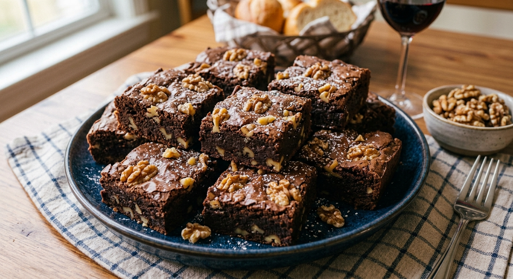
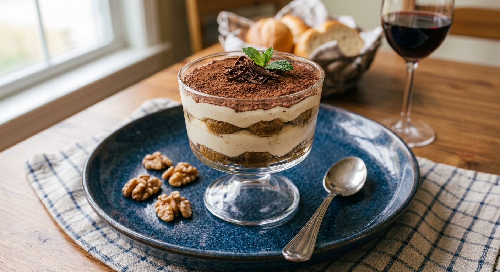

Tarta de Queso al Horno
Una tarta de queso cremosa estilo New York con una base crujiente de galleta.
Descargar Receta (PDF)El toque dulce perfecto para terminar cualquier comida.

Una tarta de queso cremosa estilo New York con una base crujiente de galleta.
Descargar Receta (PDF)
Brownies intensos de chocolate oscuro, melosos por dentro y con trozos de nuez.
Descargar Receta (PDF)
El auténtico postre italiano con bizcochos de soletilla, café y crema de mascarpone.
Descargar Receta (PDF)